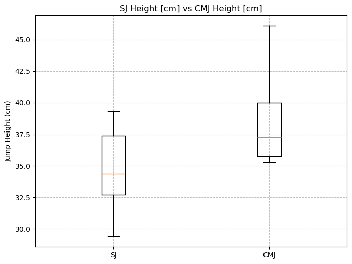
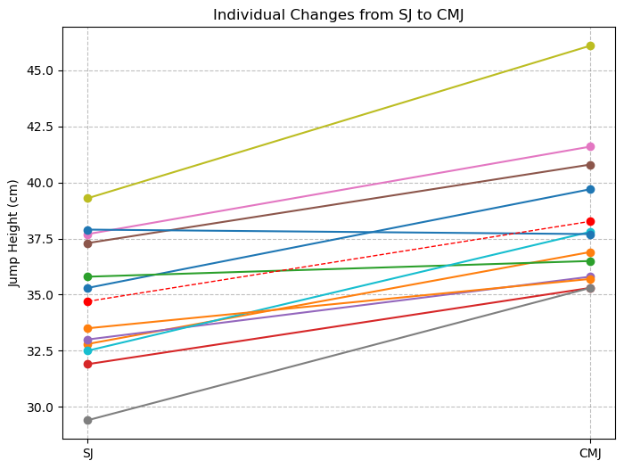

Stretch-Shortening Cycle Contribution to Vertical Jump Performance
Comparison of Squat Jump and Countermovement Jump in Athletes with Patellar Tendinopathy
0. Project accessibility
The full project is available on GitHub: Movement_Analysis_Project-2025-2026.
1. Scientific background
The stretch-shortening cycle (SSC) is a fundamental mechanism involved in explosive movements. It consists of a rapid eccentric action immediately followed by a concentric contraction, allowing the temporary storage and reutilization of elastic energy while enhancing force production.
In vertical jumping, SSC contribution is commonly explored by comparing two jump modalities: the Squat Jump (SJ) and the Countermovement Jump (CMJ). The SJ starts from a static position and mainly reflects concentric force production. In contrast, the CMJ includes a preparatory downward movement, which allows the use of SSC-related mechanisms.
Under usual conditions, CMJ height is expected to be greater than SJ height. However, in athletes with patellar tendinopathy, jumping strategies may be altered because of pain, tendon impairment, or protective motor adaptations. It is therefore relevant to examine whether the expected CMJ advantage remains present in this pathological athletic population.
2. Aim and hypothesis
Aim
The aim of this project was to compare Jump Height (Flight Time) [cm] between SJ and CMJ in athletes with patellar tendinopathy, in order to explore whether the expected performance advantage associated with the SSC remained present.
Hypothesis
It was hypothesized that jump height would be greater in the CMJ condition than in the SJ condition. This difference was interpreted as an indirect functional indicator of SSC contribution.
3. Methods
Participants
The sample included 12 high-level athletes diagnosed with patellar tendinopathy. Each participant performed both jump conditions, which justified a within-subject paired analysis.
Outcome measure
The primary outcome extracted from each file was Jump Height (Flight Time) [cm]. Only the Mean value was retained for each condition.
Jump height derived from flight time estimates the vertical displacement of the center of mass during the airborne phase, assuming ballistic motion and equivalent center of mass position at take-off and landing.
h = (t² × g) / 8Data organization
| Element | Description |
|---|---|
SJ.xlsx | File containing Squat Jump results for each participant. |
CMJ.xlsx | File containing Countermovement Jump results for each participant. |
Jump Height (Flight Time) [cm] | Main variable extracted for the analysis. |
Global_Jump_Height.xlsx | Cleaned paired dataset generated with Python and used in R. |
Plot/ | Folder containing the exported figures used in this report. |
4. Analysis workflow
The project followed a two-step workflow. Python was used first to automate data extraction, clean the dataset, and generate descriptive visualizations. R was then used to perform the statistical analysis.
| Step | Tool | Purpose |
|---|---|---|
| Data extraction | Python | Extract mean jump height from SJ and CMJ files. |
| Data cleaning | Python | Create a paired dataset with one row per participant. |
| Visualization | Python | Generate a boxplot and a paired plot. |
| Statistical analysis | R | Test whether CMJ height was significantly greater than SJ height. |
5. Python analysis
The Python script browsed all participant folders, identified the relevant Excel files, detected the correct header row, extracted the row corresponding to Jump Height (Flight Time) [cm], and retained the Mean value for each condition.
Show Python extraction code
import os
import pandas as pd
data_folder = "data"
def read_clean_df(file_path):
df = pd.read_excel(file_path, header=None)
# Find the row containing "Name"
header_row = df[df.apply(lambda row: row.astype(str).str.contains("Name").any(), axis=1)].index[0]
# Rebuild the dataframe with the correct headers
df.columns = df.iloc[header_row]
df = df.iloc[header_row + 1:].reset_index(drop=True)
return df
data = []
for patient in os.listdir(data_folder):
patient_path = os.path.join(data_folder, patient)
if not os.path.isdir(patient_path):
continue
values = {"SJ_Mean": None, "CMJ_Mean": None}
for file in ["SJ.xlsx", "CMJ.xlsx"]:
file_path = os.path.join(patient_path, file)
if not os.path.exists(file_path):
continue
try:
df = read_clean_df(file_path)
row = df[df["Name"] == "Jump Height (Flight Time) [cm]"]
mean_value = float(row["Mean"].values[0])
if file == "SJ.xlsx":
values["SJ_Mean"] = mean_value
else:
values["CMJ_Mean"] = mean_value
except Exception as e:
print(f"{patient} - {file}: error -> {e}")
data.append({
"Patient": patient,
"SJ_Mean": values["SJ_Mean"],
"CMJ_Mean": values["CMJ_Mean"]
})
df_final = pd.DataFrame(data)
df_final.to_excel("data/Global_Jump_Height.xlsx", index=False)This step produced the cleaned file Global_Jump_Height.xlsx, which was used as the input for the R statistical analysis.
6. R statistical analysis
R was used for the inferential analysis. Since the same participants performed both jump conditions, the comparison was treated as a paired within-subject analysis.
The paired difference was calculated as Delta = CMJ_Mean - SJ_Mean. Normality of paired differences was assessed using the Shapiro-Wilk test. Since the normality assumption was respected, a paired Student t-test was used. Cohen's d was calculated to estimate the magnitude of the effect.
Show R statistical code
library(readxl)
library(dplyr)
library(knitr)
library(effsize)
# Import the cleaned dataset generated by Python
df <- read_xlsx("data/Global_Jump_Height.xlsx")
# Convert variables to numeric
df$SJ_Mean <- as.numeric(df$SJ_Mean)
df$CMJ_Mean <- as.numeric(df$CMJ_Mean)
# Compute paired difference
df$Delta <- df$CMJ_Mean - df$SJ_Mean
# Descriptive statistics
mean_SJ <- mean(df$SJ_Mean, na.rm = TRUE)
sd_SJ <- sd(df$SJ_Mean, na.rm = TRUE)
mean_CMJ <- mean(df$CMJ_Mean, na.rm = TRUE)
sd_CMJ <- sd(df$CMJ_Mean, na.rm = TRUE)
mean_delta <- mean(df$Delta, na.rm = TRUE)
sd_delta <- sd(df$Delta, na.rm = TRUE)
# Normality of paired differences
shapiro_result <- shapiro.test(df$Delta)
# Paired t-test
ttest_result <- t.test(df$CMJ_Mean, df$SJ_Mean, paired = TRUE)
# Effect size
effect_size <- cohen.d(df$CMJ_Mean, df$SJ_Mean, paired = TRUE)7. Results
7.1 Individual values
The table below shows the paired values used for the statistical analysis. A positive delta indicates a higher jump height in CMJ than in SJ for the same participant.
| Participant | SJ Mean (cm) | CMJ Mean (cm) | Delta: CMJ − SJ (cm) |
|---|---|---|---|
| BOU Jul | 35.30 | 39.70 | 4.40 |
| DEL Pie | 32.80 | 36.90 | 4.10 |
| FRO Sim | 35.80 | 36.50 | 0.70 |
| GIB Val | 31.90 | 35.30 | 3.40 |
| IYE Dan | 33.00 | 35.80 | 2.80 |
| JOK And | 37.30 | 40.80 | 3.50 |
| LOU Art | 37.70 | 41.60 | 3.90 |
| MAR Hau | 29.40 | 35.30 | 5.90 |
| NOW Ade | 39.30 | 46.10 | 6.80 |
| PIE Nat | 32.50 | 37.80 | 5.30 |
| RES Gui | 37.90 | 37.70 | -0.20 |
| SEC Tim | 33.50 | 35.70 | 2.20 |
7.2 Statistical results
| Condition | Mean jump height | Standard deviation |
|---|---|---|
| SJ | 34.70 cm | 2.98 cm |
| CMJ | 38.27 cm | 3.26 cm |
| CMJ − SJ | 3.57 cm | 2.02 cm |
| Test | Statistic | p-value | Interpretation |
|---|---|---|---|
| Shapiro-Wilk test | W = 0.9762 | p = 0.9638 | Normality assumption respected. |
| Paired t-test | t(11) = 6.1163 | p = 7.56e-05 | Significant difference between CMJ and SJ. |
| 95% confidence interval | [2.28 ; 4.85] cm | — | CMJ height was reliably greater than SJ height. |
| Cohen's d | d = 1.77 | — | Large effect size. |
The results showed that jump height was significantly greater in the CMJ condition than in the SJ condition. The mean paired difference was 3.57 cm, with a large effect size, indicating that the observed difference was not only statistically significant but also meaningful in practical terms.
8. Interpretation of the results
The statistical results indicate a clear and robust difference between the two jump conditions. On average, participants jumped 34.70 cm in the squat jump condition and 38.27 cm in the countermovement jump condition. The mean paired difference (CMJ − SJ) was therefore 3.57 cm, meaning that the countermovement condition produced a higher jump height at the group level.
The individual values show that this result was not only driven by the group mean. Most participants presented a positive delta, meaning that their CMJ height was greater than their SJ height. Only one participant showed a very small negative difference (-0.20 cm), while all other participants showed an increase from SJ to CMJ. This supports the idea that the CMJ advantage was broadly consistent across the sample.
The Shapiro-Wilk test showed that the distribution of paired differences was compatible with normality (W = 0.9762, p = 0.9638). This result justified the use of a paired Student t-test, because the paired t-test assumes that the within-subject differences are approximately normally distributed.
The paired t-test showed a statistically significant difference between SJ and CMJ (t(11) = 6.1163, p = 7.56e-05). This means that the probability of observing such a difference by random variation alone is very low. The 95% confidence interval ranged from 2.28 cm to 4.85 cm, indicating that the true mean advantage of CMJ over SJ was likely positive and clinically meaningful within this sample.
The effect size was large (Cohen's d = 1.77), showing that the magnitude of the SJ-CMJ difference was substantial. Therefore, the result should not be interpreted only as statistically significant, but also as practically relevant for vertical jump performance.
From a biomechanical perspective, this pattern is consistent with the expected role of the stretch-shortening cycle. The CMJ includes a preparatory eccentric phase, whereas the SJ starts from a static position. The higher jump height observed in CMJ can therefore be interpreted as an indirect functional indicator of the performance benefit associated with the stretch-shortening cycle.
However, this interpretation must remain cautious. The present analysis is based only on jump height derived from flight time. It does not directly measure tendon mechanical properties, muscle activation, joint kinetics, or movement strategy. Therefore, the results suggest that the SSC-related performance advantage was preserved at the group level, but they do not directly prove the underlying neuromechanical mechanisms.
9. Graphical analysis
9.1 Boxplot interpretation

Figure 1. Distribution of jump height values in SJ and CMJ conditions.
The boxplot shows a clear upward shift of the distribution in the CMJ condition compared with the SJ condition. The median jump height is higher in CMJ, and the interquartile range is positioned at higher values. This indicates that the improvement from SJ to CMJ was visible at the group level.
Although some overlap exists between the two distributions, the overall pattern indicates greater jump performance during the countermovement condition. The variability appears relatively comparable between conditions, suggesting that the difference was not driven by one isolated extreme value.
9.2 Paired plot interpretation

Figure 2. Individual changes in jump height from SJ to CMJ.
The paired plot provides a more precise representation of within-subject changes. Each line connects the SJ value to the CMJ value of the same participant. Most participants showed an upward trajectory, meaning that jump height increased when a countermovement was performed.
This graphical pattern is important because it shows that the difference observed at the group level was also generally present at the individual level. The consistency of the upward lines supports the use of a paired statistical test and visually confirms the positive mean difference identified in R.
Physiologically, this result is consistent with the expected contribution of the SSC. However, the graphical analysis remains performance-based and indirect. These figures do not directly measure tendon mechanics, muscle activation, or joint-specific strategies.
10. Discussion
The main finding of this project is that athletes with patellar tendinopathy demonstrated significantly greater jump height in CMJ than in SJ. This result is consistent with the expected functional advantage provided by the stretch-shortening cycle during explosive movements.
Because the CMJ includes a preparatory eccentric phase whereas the SJ starts from a static position, the difference between the two conditions can be interpreted as an indirect functional indicator of SSC contribution. In this sample, the CMJ advantage remained clearly visible despite the presence of patellar tendinopathy.
The large effect size and the consistency of the individual responses strengthen this interpretation. At the level of jump height performance, the expected SSC-related benefit appears to be preserved in this pathological athletic population.
However, this interpretation must remain cautious. The present project only examined jump height derived from flight time. It did not directly assess tendon mechanical behavior, muscle activation, joint kinetics, or detailed movement strategies. Therefore, the observed difference should not be interpreted as a direct measurement of SSC efficiency, but rather as a simple and reproducible performance-based marker.
11. Conclusion
In this sample of athletes with patellar tendinopathy, jump height was significantly greater in the Countermovement Jump than in the Squat Jump. The mean gain of 3.57 cm, the highly significant paired t-test, and the large effect size support a robust difference between conditions.
These findings are consistent with the expected contribution of the stretch-shortening cycle and suggest that its functional benefit on jump height remained present at the group level. This project supports the use of SJ-CMJ comparison as a simple and meaningful indirect marker of SSC-related performance.
The workflow also demonstrates a coherent use of digital tools: Python was used for data extraction and visualization, while R was used for statistical testing and interpretation.
12. References
Ben Zaki, B., Julia, M., Desmyttere, G., Perrey, S., & Dusfour, G. (2025). Altered landing strategy during vertical jump tasks in elite volleyball players with patellar tendinopathy.
Bisseling, R. W., Hof, A. L., Bredeweg, S. W., Zwerver, J., & Mulder, T. (2007). Relationship between landing strategy and patellar tendinopathy in volleyball. British Journal of Sports Medicine, 41(7), e8.
Butler, R. J., Crowell, H. P., & Davis, I. M. (2003). Lower extremity stiffness: Implications for performance and injury. Clinical Biomechanics, 18(6), 511–517.
DeVita, P., & Skelly, W. A. (1992). Effect of landing stiffness on joint kinetics and energetics in the lower extremity. Medicine & Science in Sports & Exercise, 24(1), 108–115.
Linthorne, N. P. (2001). Analysis of standing vertical jumps using a force platform. American Journal of Physics, 69(11), 1198–1204.